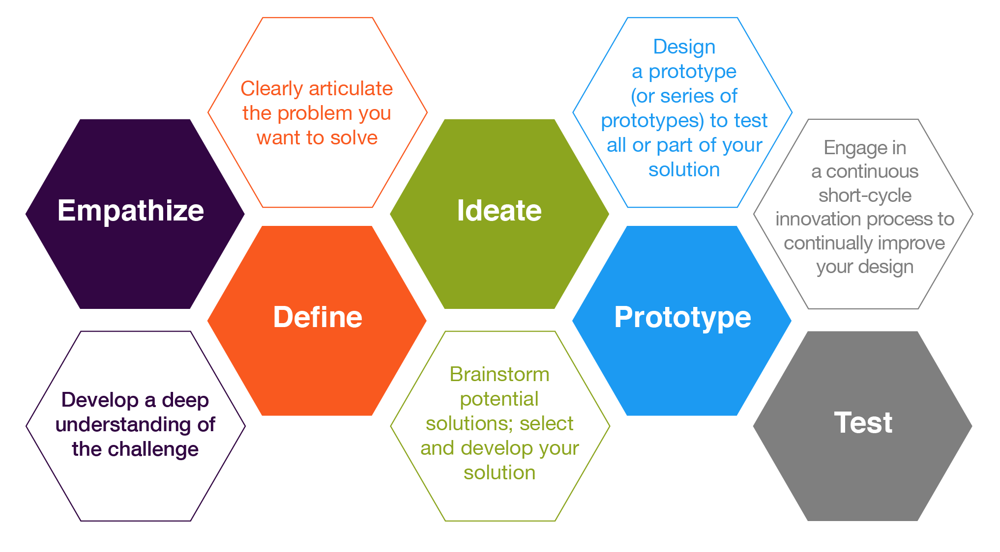
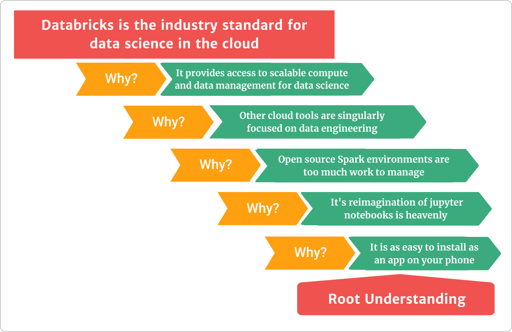

Welcome to DS 460
Day 1: How this class works
Today
- What you’ll be able to do by the end of the semester
- How the class runs: like a start-up, not a lecture
- How you’ll learn: on purpose, with some confusion
- How you’re graded: four competencies and a letter
- What to do this week
Why this course
By the end of the semester, you’ll be able to
- Explore and interpret distributed data at scale in business contexts, using Databricks and PySpark.
- Implement the pipeline, from API ingestion through feature engineering to a containerized app.
- Present data-informed arguments for technical team decisions.
- Identify the differences and benefits of current industry tools for big data storage and analysis.
The tools
Data
Polars
PySpark
Spark SQL
Platforms
Databricks
Google Cloud (GCP)
Docker
Collaboration
git
GitHub
Streamlit or Marimo apps
We’ll use git and GitHub in almost everything: team work, trainings, and submissions.
Is this a data engineering course?
Data engineer
Big client, small change.
Builds pipelines and tools used by thousands. Refines systems every day. Talks mostly with IT and CS.
Data scientist
Small client, big change.
Serves tens of people in management. Proposes new methods and data sources. Talks mostly with the business.
We use data engineering tools, but for data science: helping management make decisions.
How the course is designed
The course follows five principles for teaching data science:
- Organize around diverse case studies
- Use computing in every part of the course
- Teach abstraction, with little mathematical notation
- Make activities realistically mimic a data scientist’s work
- Show the value of critical thinking and skepticism through examples
How class runs
The class runs like a start-up
- We’re a “company” with a mandate: learn big data programming and solve hard data problems.
- The class decides how we get from week 1 to week 13.
- We take turns teaching each other the tools.
- We work in small teams, but make decisions as a class.
- Class meetings are working-group meetings, like in industry.
You should not expect anything about this class to be “traditional” in the context of academia.
If you need someone to give you due dates and tell you exactly what to read each night, this class will push you into a new way of learning.
What we do in class
No traditional lectures. Class time goes to team work:
Presentation development
Almost every project ends with a presentation.
Individual development
Your own work on the current project.
Decision-point presentations
Teams pitch; the class agrees on one approach.
Programming training
Teams build and lead hands-on activities for the class.
What you’ll turn in
The work is open-ended, mostly in teams, with some individual submissions. Usually:
- A tools coding challenge (data munging and visualization)
- A Spark team feature build challenge
- Spark coding challenges (munging and feature creation)
- In-class written code challenges (yes, paper and pencil)
- An analytics app (Streamlit or Marimo, Docker, GCP)
- A team training on tools and code (15 to 120 minutes)
Current projects: github.com/byuibigdata
Design thinking guides our projects

Source: Illinois CITL
Agile rhythm
Daily stand-up (5–10 min)
- What did you work on?
- What will you work on next?
- What’s blocking you?
Every two weeks
- Planning: pick tasks from the backlog
- Review: each team shows what it finished
- Retro: what worked, what didn’t, what changes
Accountability and communication. Unfinished work carries over to the next sprint.
Agile data science
Russell Jurney’s manifesto, in short:
- Iterate, and ship intermediate output. Commit everything to source control.
- Perform experiments, not tasks.
- Listen to the data. Ground discussions in exploratory visualization.
- Respect the data-value pyramid:
plumbing → clean & question → explore & summarize → infer & predict → deliver value
Presentations: live jazz, not a symphony
- Informal ≠ unprepared.
- Make your point early, then justify it.
- Be ready to go deep on data and methods.
- Bad charts hurt your argument.

Practice the “five whys” before you present.How you’ll learn
Preparation
- No assigned weekly readings.
- 6 hours a week outside class building your Spark skills.
- Use the curated resources or find your own.
- You pace yourself with a learning plan:
Weeks 1–3
Explore resources. End of week 2: review the Spark materials you plan to use.
Weeks 4–5
Plan. Map concepts to resources. Propose a PySpark training with a partner.
Weeks 6–13
Execute a weekly plan with hours and topics.
Learning should burn a little
Confusion has the potential to motivate, lead to deep learning, and trigger problem solving.
- Confusion is part of learning, not a sign you’re failing.
- When the answer comes too soon, you skip the exploration that builds understanding.
- Learning how to learn is the key to career growth after graduation.
The earth doesn’t go around the sun in a day. It takes a year. Watch the video
Your instructor is a mentor and a manager
- A teacher instructs from set criteria. A mentor guides your growth.
- Treat me like an expensive consultant ($300 to $500 an hour): bring me the parts you can’t quite figure out on your own.
- The class sets the project vision. I set the technical learning goals.
- I have high expectations, and I’ll tell you when you fall short.
What past students said
I personally feel much more prepared for a real work environment after this class than any other class.
My biggest takeaway is that to learn or be good at something, pain is inevitable but the result is satisfying after you put in the work.
If you don’t ask for help, you might fail this class! (Also from a past student.)
How you’re graded
Four competencies
Impact
Your team sees you as an equal or primary contributor.
Involvement
Come prepared. Ask questions, give answers, help direct.
Hours
The best predictor of success.
Understanding
Be the go-to person on a few topics.
These map to how an employer will judge you. You don’t need to be exceptional in all four.
Hours
9 hours per week: 6 outside class + 3 in class
110 hours for an A
- A 3-credit class is a 9-hour-a-week job.
- Track your hours from day one.
- Hours are what let you produce, but you show hard work through your products, not your hours.
Competency scale
| Grade | Hours | Challenges | Oral/written | Replication | Involvement | Impact |
|---|---|---|---|---|---|---|
| A | 110 | 4 on key* challenges & 3 or higher on the rest | Pass 3 | All complete | < 3 warnings & < 3.1 hours of class missed | Active on all & primary on > 2 |
| B | 90 | 3 on key* challenges & 3’s on most | Pass 2 | < 2 missing | < 9.1 hours of class missed, or a write-up | Active on most & primary on > 1 |
| C | 70 | A 3 on any challenge | Pass 1 | < 3 missing | < 4 warnings | Active often & primary on > 0 |
| D | 50 |
*Key challenges: any PySpark challenge and the end-of-semester app challenge.
Challenges are scored 1 to 4
1 Submitted work
2 Some code aligns with the challenge
3 Strong performance, satisfactory code
4 Near flawless, clean and concise code
All challenges are announced at least 24 hours ahead, with the programming topic.
You write your own grade request
At the end of the semester you submit a grade request letter, like an end-of-year review with an employer.
- Be clear about what you delivered.
- You can negotiate: use strength in one area to argue for a shortfall in another.
I achieved only a satisfactory score on my final coding challenge, but I completed 119 hours and was a key contributor to 5 projects. As such, I request an A.
Read the example letter with discussion before you write yours.
Getting started
This week
- Read the syllabus and the course paradigm.
- Start tracking your hours.
- Start exploring the Spark learning resources. Your review is due at the end of week 2.
- Need to talk? Schedule a visit.
Discuss
What do you want to be the go-to expert on by the end of the semester?
Pick one or two topics. That’s where your “understanding” competency comes from.

DS 460 · Big Data Programming & Analytics